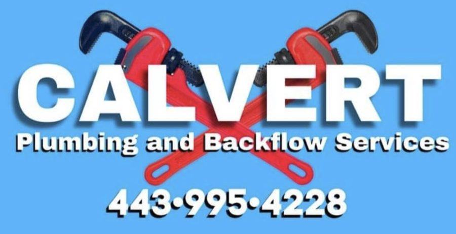
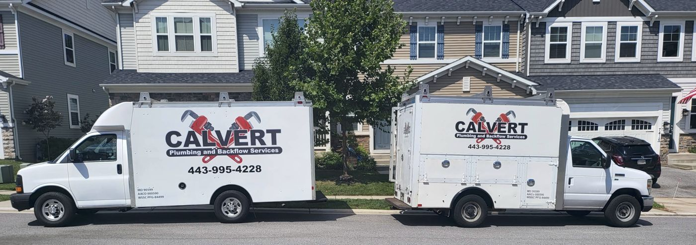

Plumbing help at any hour in Pasadena, MD
Leaks, clogs, water heaters, sewer lines and backflow testing from a licensed Maryland plumber.

What we fix and install
Residential plumbing for homes in Pasadena, Riviera Beach and nearby communities.
Drains and stoppages
Clogged sinks, tubs and main lines cleared and repaired.
Water heaters
Repair and replacement, including tankless units.
Main water and sewer
Service line repair and replacement, plus sewer inspections.
Sewer camera inspection
We camera-inspect drains 3 inches or larger to find the problem before digging.
Sump and sewage pumps
Pumps and pits installed, repaired and replaced.
Fixtures and piping
Faucets, toilets, tubs, showers and water piping.
Well systems
Plumbing service for homes on private wells.
Remodels and new builds
New plumbing for kitchens, bathrooms and additions.
Backflow testing and repair
A backflow device keeps dirty water out of your drinking supply. Many properties need theirs inspected on a regular schedule. We test, repair and install them.
Why homeowners call Calvert
Always answering
Emergency calls go straight to the owner, day or night.
Licensed in Maryland
Owner and plumber Jason Calvert runs every job.
Family owned and local
Based in Pasadena and serving the surrounding area.
Clear communication
Customers say pricing and next steps are explained up front.

What customers say
96 customer reviews
Honest and reliable
Reviewers describe Calvert as an honest company they recommend for any plumbing problem.
Repeat customers
Many have hired Calvert more than once, including for yearly backflow testing at a fair price.
Professional work
Customers point to Jason's knowledge and experience across multiple projects.
Common questions
Do you take emergency calls at night?
Yes. Call (443) 995-4228 any time, any day of the week.
What is backflow testing?
It checks that the device protecting your water supply still works. Call us to find out whether your property needs one tested.
Where do you work?
Pasadena, Riviera Beach and nearby communities. Call to confirm your address.
Request service
Calvert Plumbing and Backflow Services
189 Lake Rd
Pasadena, MD 21122
(443) 995-4228
calvertplumbingandbackflow@gmail.com
Open 24 hours, 7 days a week.